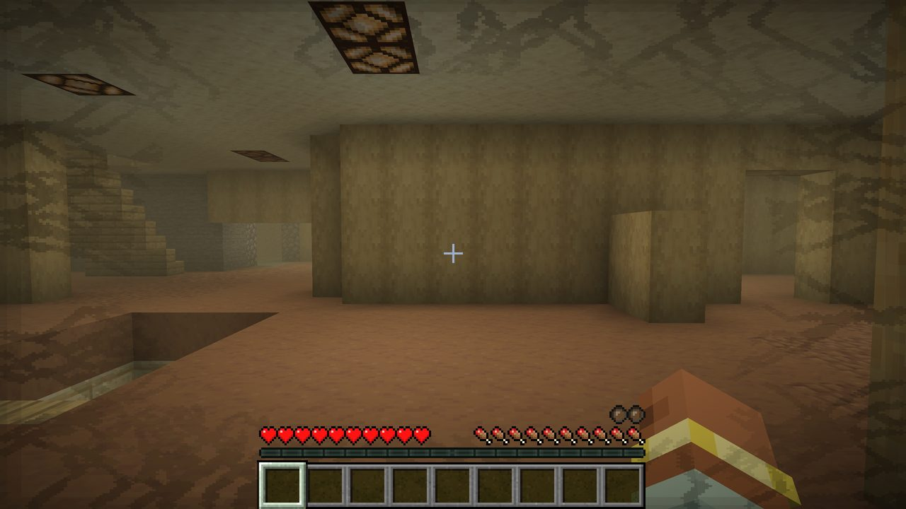
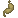

Home » The dimension » Insanity
Insanity
The Remembering wears on you. The insanity meter rises the longer you stay inside, and it is only ever calm in a refuge.

The meter#
Every player has an insanity meter from 0 to 1. It is shown as a row of dark insanity bubbles above the hunger bar (stacked above the air bubbles underwater) that burst one by one as it rises.
| Where you are | What the meter does |
|---|---|
| Inside The Remembering, the first 90 seconds | Nothing: a grace period. |
| Inside The Remembering after that | Rises from empty to full in about 8 minutes. |
| In a refuge or remembered room, or within a few blocks of a Gateway | Falls slowly, from full to empty in about a minute. |
| Anywhere outside The Remembering | Falls fast, from full to empty in about 15 seconds. |
Insanity is kept when you leave and rejoin a server (the grace period too), so logging out does not reset it. It clears when you die.
What it does#
| From | Effect |
|---|---|
| 0.3 | Your field of view narrows a little and breathes. |
| 0.4 | Whispers. |
| 0.5 | Dark veins creep in round the edges of the screen. |
| 0.6 | A heartbeat, louder as it rises. The fog starts turning black and closes in over about ten seconds. |
| 0.8 | Nausea. |
| 0.92 | Short random teleports: you blink 6 to 30 blocks away in a burst of black. |
Resting
Find a refuge before the heartbeat starts, or stand next to an open Gateway. Even better, step back out through a door for a few seconds: outside, the meter empties in about 15 seconds.
Players who find the screen effects too much can turn off the dark veins on their own client with insanityOverlay = false in backrooms-client.toml. Servers can turn insanity off completely with insanity.enabled (see Config).
Potions#
Three potions, brewed in two steps through a mod-only middle potion so they never clash with vanilla brews. Splash and lingering versions and tipped arrows come from the usual vanilla steps (gunpowder, then dragon's breath).
| Potion | Brew | Effect |
|---|---|---|
| Potion of Memory | Awkward Potion + | No effect. Only the base for the other two. |
| Potion of Insanity | Potion of Memory + Fermented Spider Eye | |
| Potion of Sanity | Potion of Memory + Golden Carrot |
Potions of Sanity and Splash Potions of Insanity also turn up in the room chests of The Remembering.
Potions of Insanity are in the Buried Works too: each storeroom and archive chest has a 30% chance of them, either one or two to drink (20%) or a splash one (10%).
The meter only bites inside
The Insanity effect only moves the meter; the meter then does the rest (veins, heartbeat, black fog, nausea, teleports). Those only happen inside The Remembering. A Splash Potion of Insanity on a friend in the overworld fills their meter but only narrows their view, and the meter drains again as soon as the effect ends.
Distorted#
